Jadi Tim Cek Fakta dan Jejak Digital!
Naik level: kamu menjadi detektif informasi, auditor akun, dan pembuat panduan untuk adik kelas.
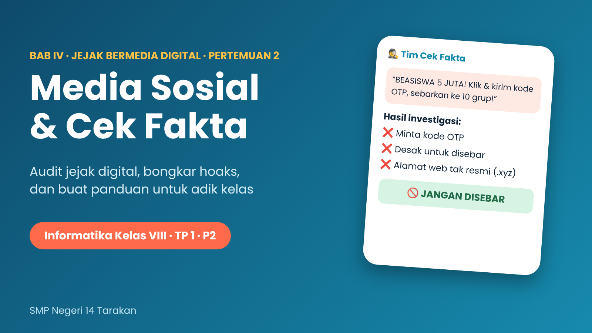
1. Pemanasan: Pesan Berantai
Bayangkan ada pesan masuk ke grup kelasmu seperti ini. Pesannya heboh, ada hadiah, dan harus cepat-cepat disebar.
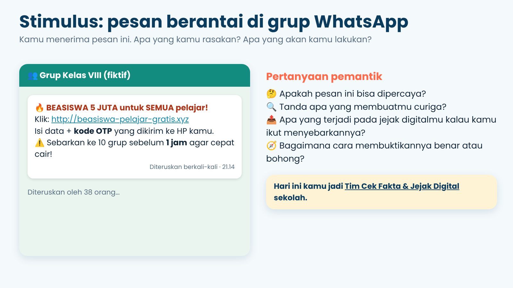
Apa yang kamu rasakan? Tanda apa yang bikin kamu curiga? Kalau kamu ikut menyebarkannya, apa yang terjadi pada jejak digitalmu?
Hari ini kamu dan timmu mengerjakan proyek dengan tiga misi: A. Investigasi, B. Audit akun, dan C. Poster untuk adik kelas VII.
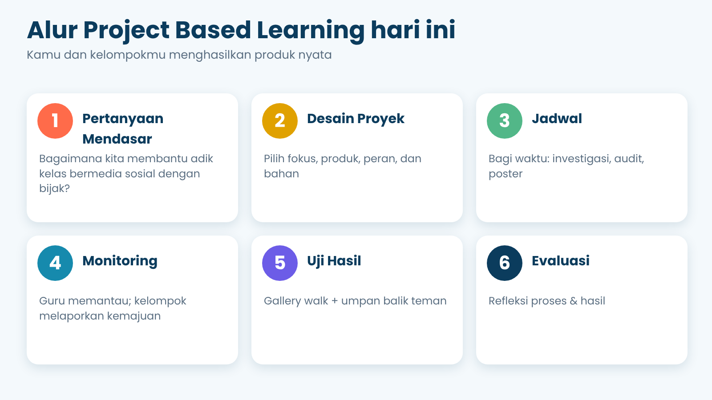
2. Apa Sih Media Sosial Itu?
Media sosial adalah media interaktif berbasis internet. Di sana kamu bisa membuat dan membagikan konten (teks, foto, video, animasi, komentar) dan terhubung dengan orang atau grup tertentu lewat profil. Ia termasuk produk Web 2.0.
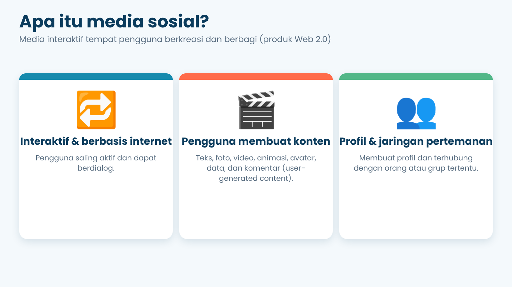
Beda dengan TV atau radio: kita tidak hanya menonton, tetapi juga bisa membalas dan membuat konten sendiri.
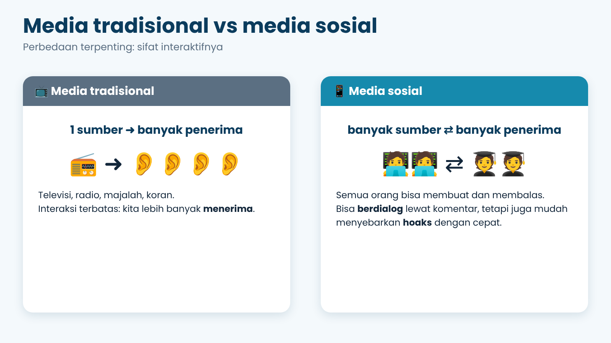
Riset 2022 yang dikutip Buku Siswa menyebut rata-rata orang memakai media sosial sekitar 2,5 jam per hari. Kira-kira berapa jam kamu?
Delapan tipe media sosial
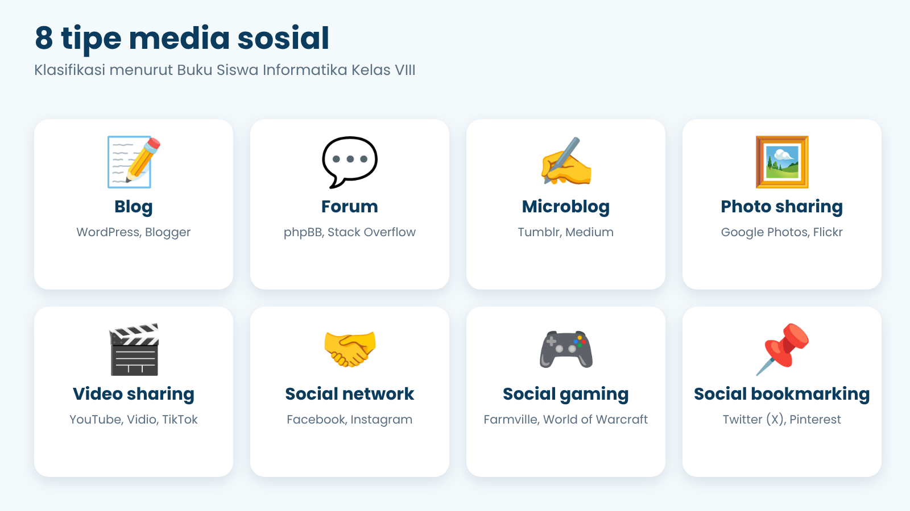
Dampak media sosial
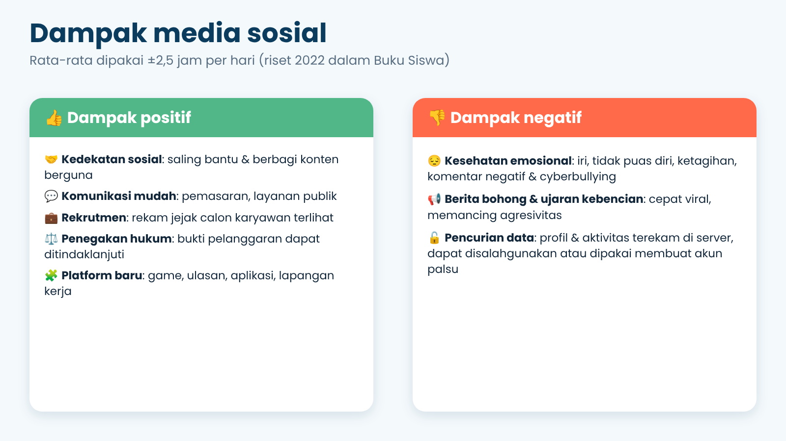
| Dampak | Contohnya |
|---|---|
| 👍 Positif | Kedekatan sosial dan berbagi konten berguna; komunikasi lebih mudah; rekam jejak terlihat saat rekrutmen; bukti pelanggaran bisa ditindaklanjuti; muncul platform dan lapangan kerja baru. |
| 👎 Negatif | Emosi terganggu (iri, ketagihan, cyberbullying); berita bohong dan ujaran kebencian cepat viral; data profil dicuri atau dipakai untuk membuat akun palsu. |
3. Jejak Pasif yang Lebih Dalam
Di pertemuan 1 kamu kenal jejak pasif. Sekarang kita intip tiga contohnya.
a. Metadata: data tentang data
Setiap foto membawa “catatan kecil”: kapan diambil, dari perangkat apa, dan (kalau lokasi aktif) di mana. Beberapa platform menghapusnya saat unggah, tetapi kalau kamu mengirim berkas asli, metadata bisa ikut terkirim.
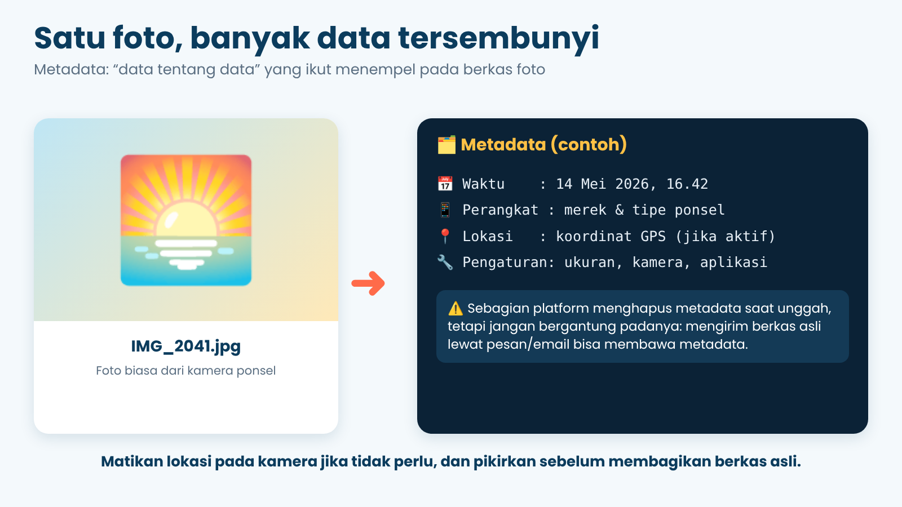
b. Cookies dan iklan yang “mengikutimu”
Habis cari sepatu, tiba-tiba iklan sepatu muncul di mana-mana? Situs menyimpan cookies untuk mencatat kebiasaanmu, lalu data itu dipakai untuk menebak minatmu.
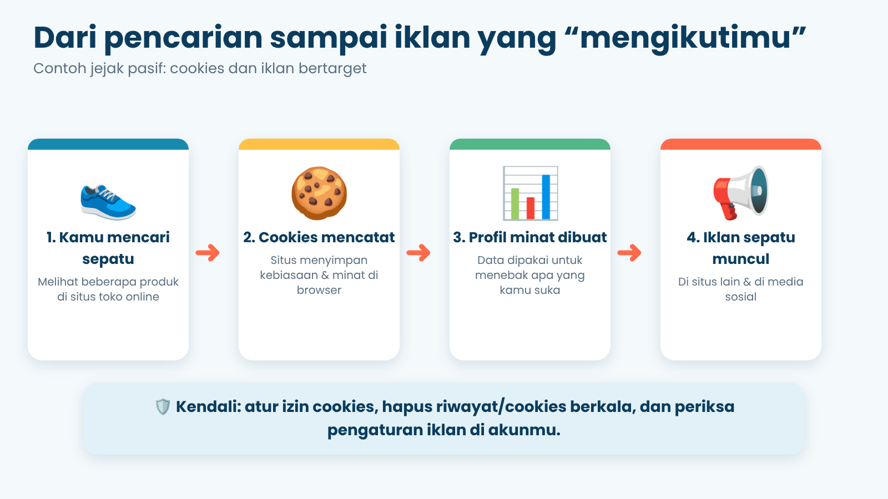
c. Algoritma: kenapa berandamu beda?
Aplikasi menampilkan konten berdasarkan apa yang kamu sukai dan tonton. Karena jejak tiap orang berbeda, beranda temanmu bisa sangat berbeda dari berandamu.
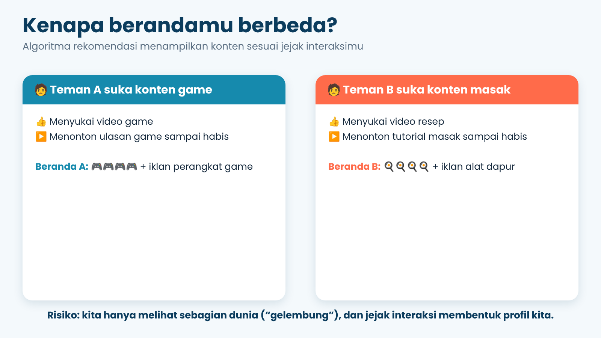
Algoritma tidak tahu mana yang benar. Konten yang sering muncul atau banyak dibagikan belum tentu benar.
4. Hoaks, Opini, atau Penipuan?
Hoaks adalah informasi yang secara fakta tidak benar dan menyesatkan. Tapi tidak semua yang “aneh” itu hoaks. Kenali dulu jenisnya:
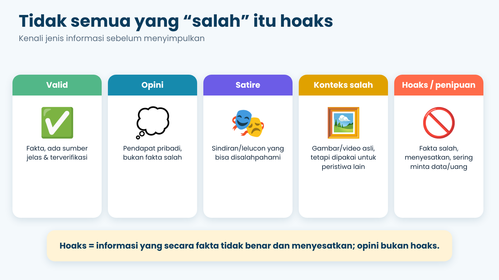
Enam langkah Tim Cek Fakta
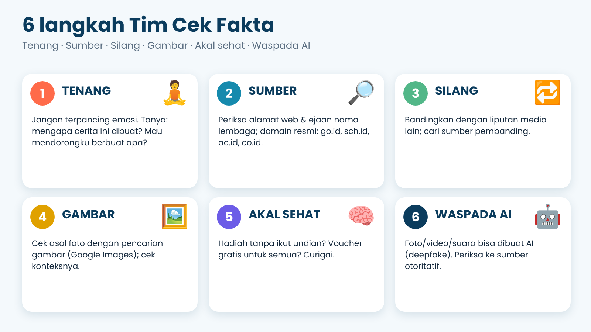
- Tenang. Hoaks sering memancing emosi. Berhenti sebentar dan tanya: kenapa cerita ini dibuat?
- Sumber. Lihat alamat webnya. Domain resmi: go.id, sch.id, ac.id, co.id. Hati-hati salah ketik nama lembaga.
- Silang. Bandingkan dengan media lain atau situs pengecek fakta seperti turnbackhoax.id.
- Gambar. Cari asal foto lewat pencarian gambar dan lihat kemunculannya yang paling awal.
- Akal sehat. Hadiah tanpa ikut undian? Gratis untuk semua? Curigai!
- Waspada AI. Foto, video, dan suara bisa direkayasa. Periksa ke sumber yang berwenang.
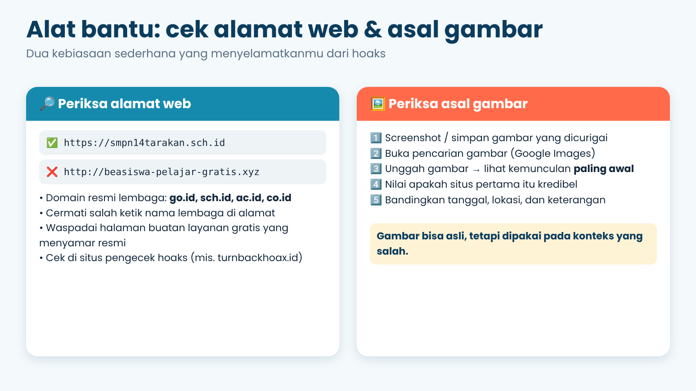
Hasil pencarian tetap harus kamu tafsirkan sendiri. Pakai kata kunci yang spesifik (nama, tempat, tanggal, kutipan inti), tambahkan kata “hoaks” atau “cek fakta”, lalu bandingkan beberapa sumber.
Deepfake: waspada konten buatan AI
Deepfake adalah foto, video, atau suara yang direkayasa teknologi AI supaya mirip aslinya. Perhatikan petunjuk visual berikut, tetapi ingat: tidak ada satu tanda yang pasti.
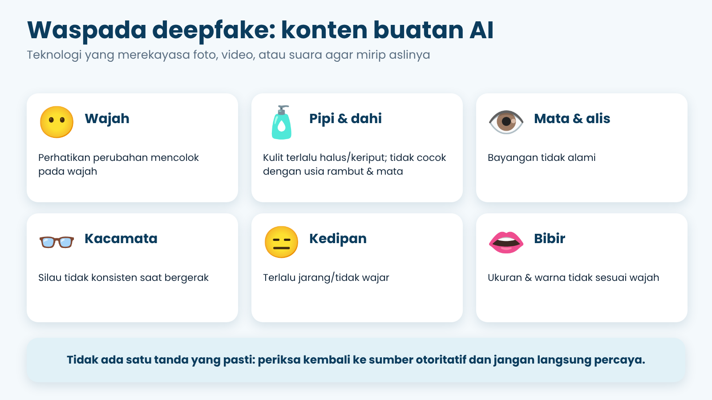
5. Audit Akun dan Hitung Risikonya
Sekarang kamu jadi auditor. Pakai daftar periksa privasi ini untuk memeriksa akun (hanya akun fiktif atau akunmu sendiri, bukan akun teman!).
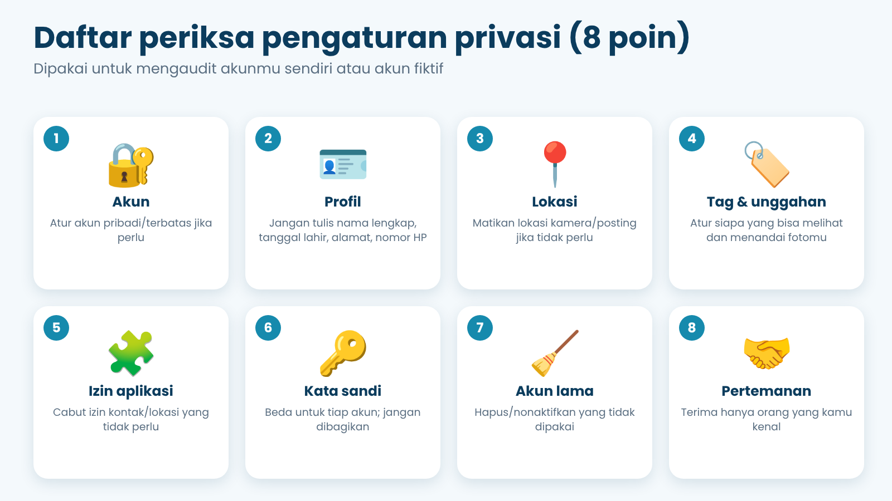
Matriks risiko
Skor risiko = kemungkinan × dampak. Kemungkinan: 1 jarang, 2 mungkin, 3 sering. Dampak: 1 rendah, 2 sedang, 3 tinggi.
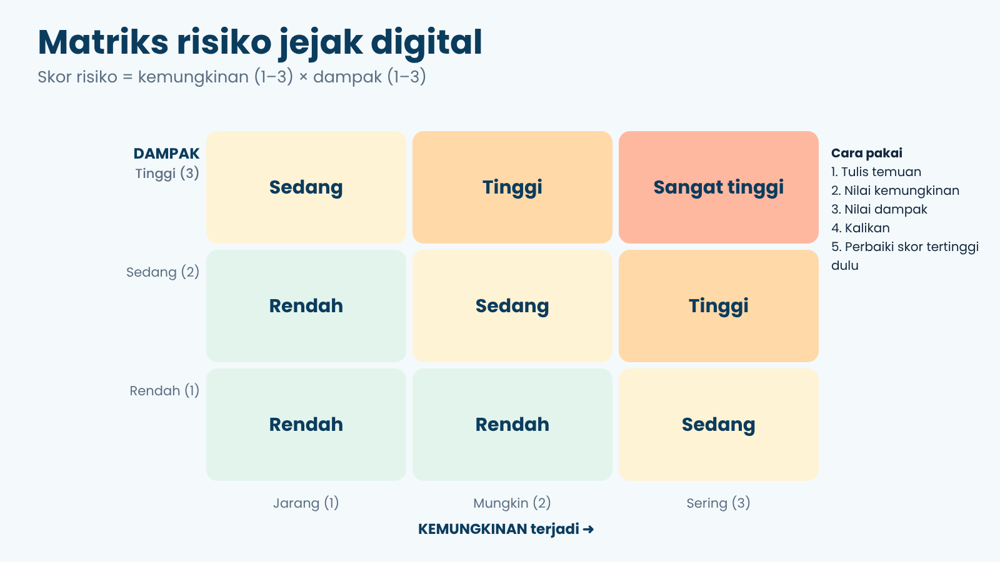
Temuan: “Profil memuat tanggal lahir dan nomor HP”. Kemungkinan dilihat orang asing = 3 (akun publik). Dampak = 3. Skor = 3 × 3 = 9 (sangat tinggi), jadi diperbaiki paling awal.
Latihan: akun @nadia.putri_ (fiktif)
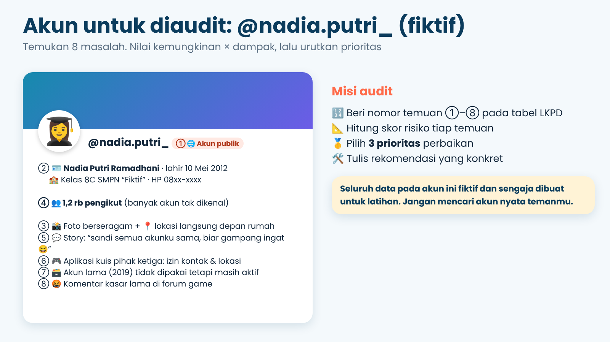
6. Sebelum Men-share, Cek Dulu!
Meneruskan pesan juga meninggalkan jejak digital. Namamu tercatat sebagai salah satu penyebarnya. Jadi tanyakan empat hal ini dulu:
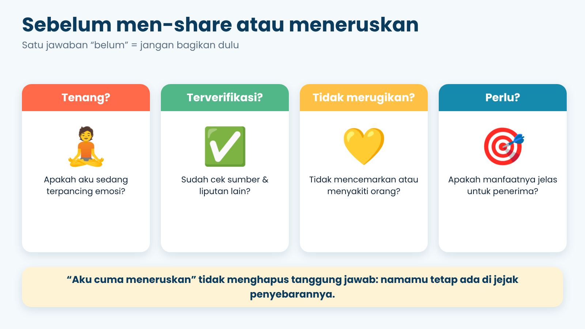
Kalimat ini tidak menghapus tanggung jawabmu. Kalau isinya bohong, kamu tetap ikut membantu menyebarkan. Menyebarkan informasi bohong yang merugikan orang lain juga bisa berakibat serius.
7. Proyek: Poster Panduan untuk Kelas VII
Misi C: buat poster/infografis dengan judul ajakan, minimal 3 pesan inti (dari hasil Misi A dan B), 1 ilustrasi, contoh nyata (fiktif), slogan, dan nama tim.
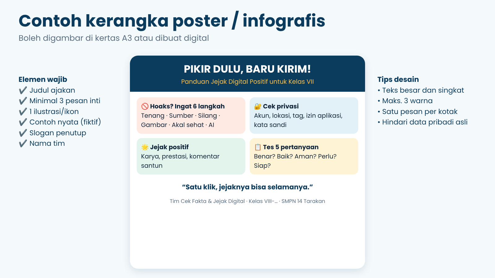
- Teks besar dan singkat. Satu kotak, satu pesan.
- Maksimal 3 warna.
- Hindari data pribadi asli. Pakai contoh fiktif.
- Gunakan bahasa adik kelas: santai dan dekat dengan keseharian mereka.
8. Rangkuman
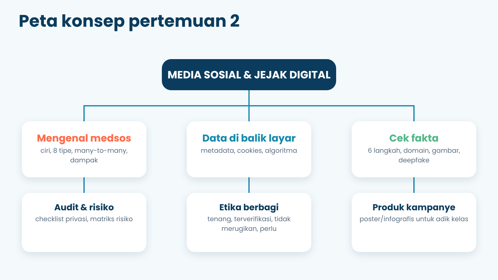
- Media sosial = interaktif, pengguna membuat konten, ada profil dan jaringan; banyak sumber ke banyak penerima.
- Jejak pasif lebih dalam: metadata, cookies, algoritma.
- Cek fakta: Tenang – Sumber – Silang – Gambar – Akal sehat – Waspada AI.
- Audit privasi: daftar periksa 8 poin dan skor risiko = kemungkinan × dampak.
- Sebelum meneruskan: Tenang? Terverifikasi? Tidak merugikan? Perlu?
9. Kuis 10 Soal
Pilih jawabanmu, lalu klik Periksa.